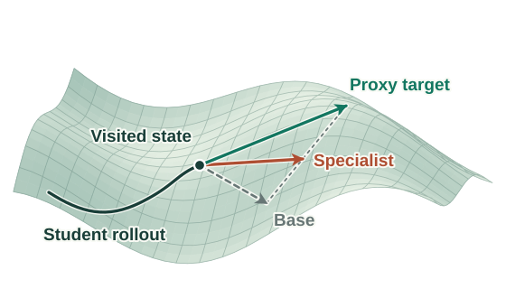
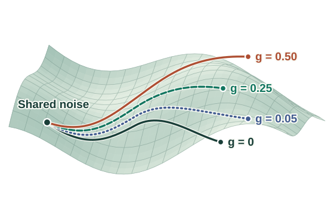

Surpassing specialist & proxy teachers
GenEval reward over 1,000 updates. Hover or click any step to inspect exact scores.
On-Policy Distillation · SD3.5-Medium
Dual-Extrapolation On-Policy
Distillation for Diffusion Models
Consolidating three frozen specialist teachers into one unified SD3.5 Medium student—surpassing every specialist and multi-teacher OPD baseline across composition, text rendering, and visual quality.
1 Shanghai Jiao Tong University 2 Nankai University
Looking for generated image comparisons? Open the dedicated qualitative examples page
Method
A frozen specialist supplies one extrapolated distillation target. The student's own recent history supplies a second reward-guided signal whenever candidates from shared noise earn different scores.

Ask the frozen base model and the task specialist for a velocity at the same state. Extend their difference beyond the specialist, then take one Euler step to obtain the proxy target.
vproxy = vT + λ (vT − vB)
The paper uses λ = 1.2 for teacher extrapolation.

Use a historical exponential moving average as the reference. At each step, extrapolate the current student's velocity away from that reference. Four gains produce four endpoints for the task scorer.
v(g) = vS + g (vS − vH)
The gain g = 0 reuses the native student rollout.

Weight each pair's endpoint difference by its reward difference. Their sum gives a direction toward higher reward. Normalize it to unit RMS to obtain G.
G = C / RMS(C)
On a native step, the auxiliary target shifts along G. The teacher and active auxiliary losses jointly update the student.
At inference the trained student follows a single trajectory in the standard SD3.5 Medium pipeline with zero extra sampling overhead.
A group activates the auxiliary update when at least two of its four rewards differ and the RMS of the endpoint–reward covariance exceeds 10−8. The extrapolated teacher supplies a target for every group.
Training diagnostics in the paperGroups with an active auxiliary direction
24,000 same-noise groups per task across 1,000 updates.

Quantitative Results
After 1,000 updates, one unified DexOPD checkpoint surpasses all three specialist teachers, every multi-task RL baseline, and all competing multi-teacher OPD methods across all three primary objectives (512 × 512, 40 steps).
GenEval reward over 1,000 updates. Hover or click any step to inspect exact scores.
Steady progress across all three tasks over 1,000 updates.
Single-task teachers peak on one column while dropping sharply on the others. DexOPD leads all three columns simultaneously in one adapter.
| Model | GenEval | OCR | DrawBench | |||||||||||
|---|---|---|---|---|---|---|---|---|---|---|---|---|---|---|
| Single | Two | Count | Colors | Position | Attr. | Acc. | Reward | Aesthetic | PickScore | ImageReward | CLIPScore | HPSv2.1 | ||
| Base model | ||||||||||||||
| SD3.5-Medium | 0.9844 | 0.7702 | 0.5714 | 0.8112 | 0.2200 | 0.5149 | 0.6336 | 0.6446 | 0.5486 | 5.3899 | 0.8614 | 0.8383 | 0.2895 | 0.2924 |
| Single-task specialist teachers | ||||||||||||||
| GenEval Teacher | 1.0000 | 0.9848 | 0.9250 | 0.9069 | 0.9750 | 0.8275 | 0.9349 | 0.9534 | 0.6515 | 5.2635 | 0.8513 | 0.9277 | 0.2869 | 0.2673 |
| OCR Teacher | 0.9719 | 0.7172 | 0.6000 | 0.7819 | 0.2225 | 0.4725 | 0.6144 | 0.6617 | 0.9435 | 5.2605 | 0.8580 | 0.8972 | 0.2909 | 0.2732 |
| Aesthetic Teacher | 0.9719 | 0.8864 | 0.6063 | 0.8670 | 0.2950 | 0.6575 | 0.7066 | 0.4791 | 0.5881 | 6.2162 | 0.9233 | 1.5016 | 0.2960 | 0.3452 |
| Multi-task reinforcement learning | ||||||||||||||
| GRPO-Guard | 0.9875 | 0.8460 | 0.7640 | 0.7846 | 0.2475 | 0.5174 | 0.6764 | 0.7202 | 0.7210 | 5.6812 | 0.8770 | 1.1531 | 0.2904 | 0.3091 |
| DiffusionNFT | 0.8844 | 0.6212 | 0.6429 | 0.7340 | 0.2450 | 0.4453 | 0.5817 | 0.7029 | 0.9434 | 5.3674 | 0.8412 | 0.6314 | 0.2787 | 0.2642 |
| DiffusionART | 0.8406 | 0.5707 | 0.5497 | 0.5665 | 0.1900 | 0.2811 | 0.4847 | 0.4427 | 0.9033 | 5.6673 | 0.8292 | 0.7193 | 0.2710 | 0.2653 |
| Multi-teacher on-policy distillation | ||||||||||||||
| DiffusionOPD | 1.0000 | 0.9924 | 0.9472 | 0.8936 | 0.9650 | 0.8383 | 0.9373 | 0.9543 | 0.9371 | 6.1820 | 0.9237 | 1.5110 | 0.3006 | 0.3547 |
| DreOPD | 1.0000 | 0.9899 | 0.9627 | 0.9069 | 0.9725 | 0.8756 | 0.9495 | 0.9622 | 0.9354 | 6.2182 | 0.9237 | 1.5259 | 0.2986 | 0.3558 |
| STEP-OPD* | 1.0000 | 0.9949 | 0.9379 | 0.8989 | 0.9750 | 0.8657 | 0.9440 | 0.9562 | 0.9378 | 6.2813 | 0.9248 | 1.5207 | 0.2985 | 0.3566 |
| DexOPD (ours) | 1.0000 | 1.0000 | 0.9688 | 0.9548 | 0.9525 | 0.8750 | 0.9566 | 0.9736 | 0.9515 | 6.4875 | 0.9190 | 1.5127 | 0.2914 | 0.3484 |
Higher is better. Bold marks the best score and underline the second-best, including ties. GenEval reports accuracy for six categories, overall accuracy (Acc.), and dense reward. * Paper-based reproduction. Table 1 in the paper.
Ablations & Diagnostics
Controlled ablations isolate teacher extrapolation, reward-guided student self-extrapolation, evolving historical referencing, and compute efficiency under the same 1,000-update budget.
01 · Component ablation
Removing teacher extrapolation (λ=0), dropping the student auxiliary branch (β=0), or anchoring to the frozen base (Hr=B) degrades every primary metric.
02 · Auxiliary-weight sensitivity (β sweep)
With λ = 1.2 fixed, β = 1.8 attains peak DrawBench Aesthetic (6.4875) while staying within 0.0007 of the GenEval peak and 0.0005 of the OCR peak. Hover or click any β to inspect all 7 metrics.
03 · Inference-time teacher extrapolation (λ trade-off)
Extrapolating a frozen specialist boosts its own target near λ ∈ [0.8, 1.4], but causes severe cross-task collapse at larger λ. Distilling at λ = 1.2 harvests strong targets without sacrificing off-task quality.
04 · Wall-clock compute efficiency
Measured on 8 × NVIDIA H20 GPUs over 1,000 updates. Reducing native batch size from 72 to 24 cuts update time to 25.59 s—matching standard single-trajectory DiffusionOPD (25.76 s) and outperforming STEP-OPD* (32.53 s) in both speed and every primary score.
25.59 s / update
GenEval 0.9680 · OCR 0.9488 · Aes 6.4857
68.18 s / update
GenEval 0.9736 · OCR 0.9515 · Aes 6.4875
25.76 s / update
GenEval 0.9543 · OCR 0.9371 · Aes 6.1820
32.53 s / update
GenEval 0.9562 · OCR 0.9378 · Aes 6.2813
Inspect same-noise comparisons across six paper prompts (side-by-side and wipe slider) and 18 multi-capability outputs on a separate page.
Checkpoint & Inference
The public release contains the rank-32 EMA LoRA from update 1,000. Attach it to the transformer of Stable Diffusion 3.5 Medium for standard single-trajectory inference.
Request access to Stable Diffusion 3.5 Medium and sign in with that Hugging Face account.
Open the base modelThe public Hugging Face repository hosts the PEFT LoRA weights and configuration.
View Hugging Face repoRun the CUDA example at 512 × 512 (paper evaluation) or 1024 × 1024, 40 steps, CFG 4.5.
Full model cardimport torch
from diffusers import StableDiffusion3Pipeline
from peft import PeftModel
pipe = StableDiffusion3Pipeline.from_pretrained(
"stabilityai/stable-diffusion-3.5-medium", torch_dtype=torch.float16
)
pipe.transformer = PeftModel.from_pretrained(pipe.transformer, "kyc001/DexOPD")
pipe.to("cuda")
pipe.vae.to(dtype=torch.float32)
with torch.inference_mode(), torch.autocast("cuda", dtype=torch.float16):
image = pipe(
'A shop window with a sign that reads "OPEN LATE"',
height=512, width=512, num_inference_steps=40, guidance_scale=4.5,
generator=torch.Generator(device="cuda").manual_seed(42),
).images[0]
image.save("dexopd.png")Ke, Hu, Yang, Jin, Liu, and Deng, 2026. arXiv:2611.31969
@misc{ke2026dexopd,
title = {DexOPD: Dual-Extrapolation On-Policy Distillation for Diffusion Models},
author = {Yunchao Ke and Yanzhe Hu and Yi Yang and Jiachun Jin and Zhihong Liu and Zhijie Deng},
year = {2026},
eprint = {2611.31969},
archivePrefix = {arXiv},
primaryClass = {cs.AI},
url = {https://arxiv.org/abs/2611.31969}
}